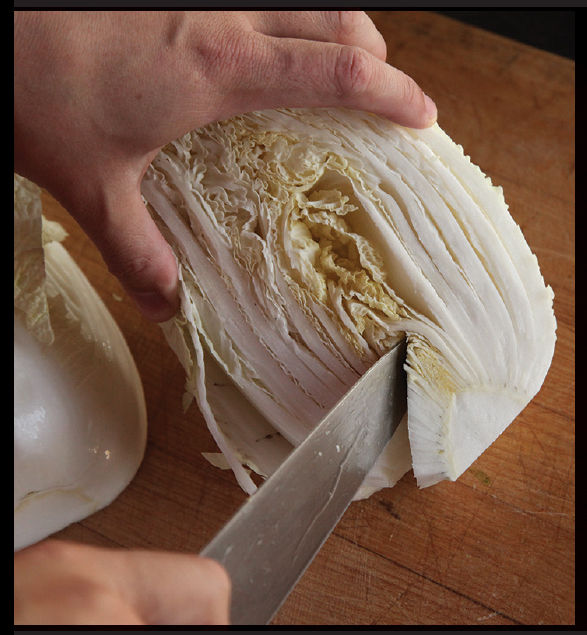
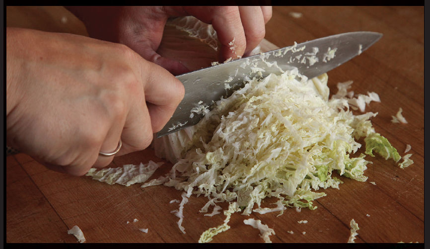
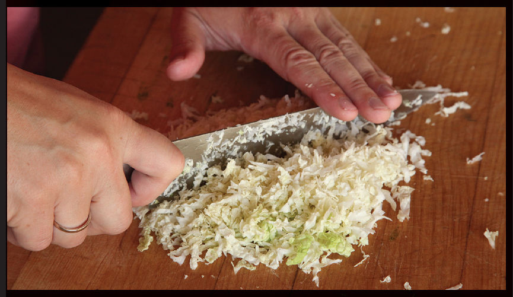
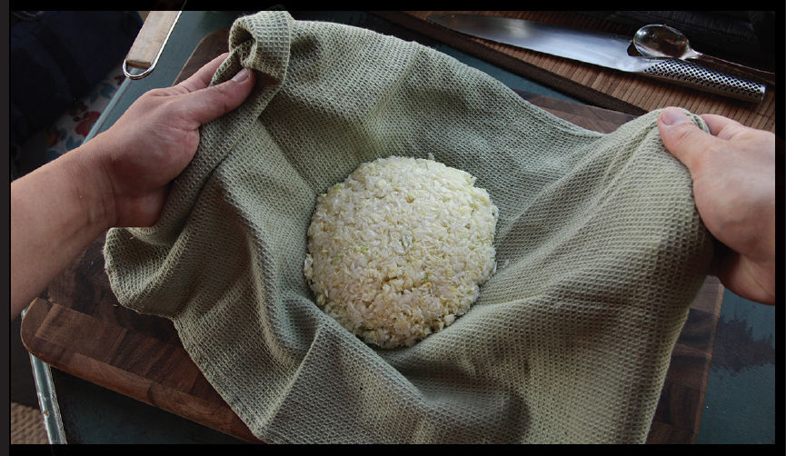
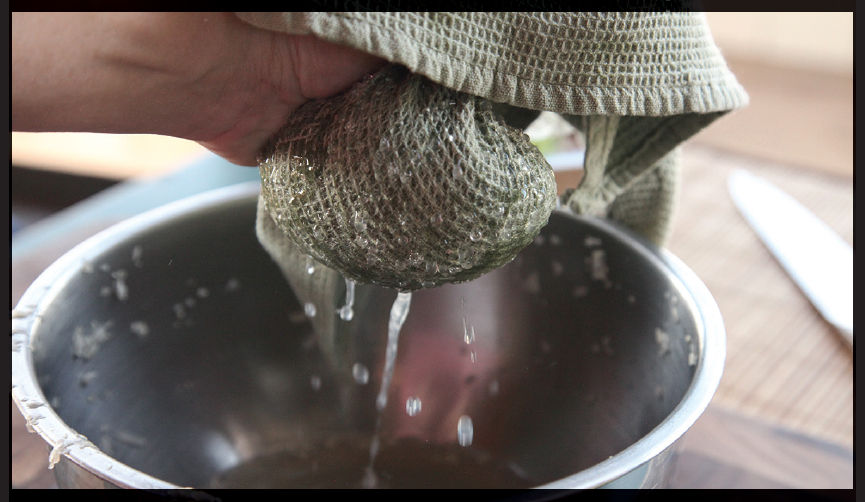

How to Purge Cabbage or Other Greens, Step by Step
Purging cabbage or other vegetables of excess liquid is a key first step when adding them to dumpling fillings. Here’s how you do it.
Step 1 • Cut Out the Core

Start by splitting a head of cabbage in half and cutting out the firm core. I played with various ratios of cabbage to pork and found that most recipes don’t use quite enough cabbage. I use a full pound of cabbage for every pound of pork. This makes enough filling for 40 to 50 plump dumplings.
Step 2 • Shred the Cabbage

Use a sharp chef’s knife to very thinly slice the cabbage. If you’ve got one, you can also shred the cabbage in a food processor fitted with the large grating disk.
Step 3 • Mince the Cabbage

After shredding the cabbage, finely mince it by rocking a sharp chef’s knife over it back and forth or by pulsing it in a food processor fitted with a standard blade.
Step 4 • Salt and Wait

Here comes the moisture-removal step. Salting the cabbage and letting it rest for about 15 minutes harnesses the power of osmosis to draw liquid out from inside its cell walls.
I use 1 teaspoon (4 g) of kosher salt for every 8 ounces (225 g) of cabbage, letting it drain in a strainer set over a bowl. Once the cabbage has had time to rest, I transfer it to the center of a clean kitchen towel.
Step 5 • Wring out Excess Moisture

Draw up the edges of the towel and squeeze the heck out of the cabbage. Seriously. Squeeze the heck out of it. If there is still liquid coming out, you haven’t squeezed hard enough. By the time you’re done, the cabbage should have lost almost three-quarters of its volume and at least half its weight.